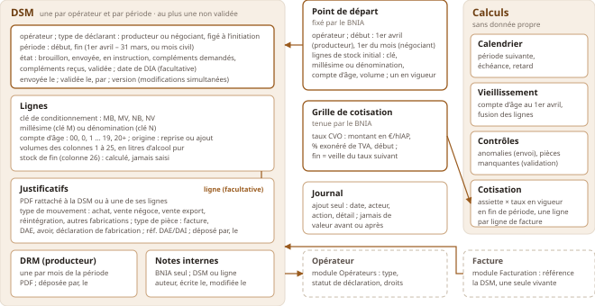
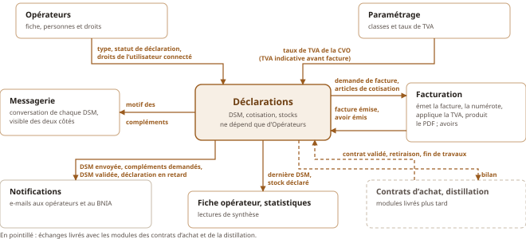

Chaque module est spécifié avant d’être développé, puis soumis au BNIA. Voici la spécification du module Déclarations, celle qui a servi à construire le prototype : son périmètre, ses cas d’usage, ses objets, ses échanges avec les autres modules, ses règles, les tests qui les vérifient, et les points que le BNIA doit confirmer.
Les douanes ont confié au BNIA le suivi des stocks d’Armagnac de chaque opérateur, et peuvent lui en demander à tout moment un état des lieux. Le module porte ce suivi. Sa valeur tient en trois points : des déclarations cohérentes (contrôles bloquants à l’envoi, pièces exigées à la validation), une instruction lisible des deux côtés, et un état des stocks opposable aux douanes.
Ce que l’analyse propose de changer au cahier des charges, pour simplifier le travail de chacun :
| Le cahier des charges prévoit | Je propose | Pourquoi |
|---|---|---|
| Le BNIA génère chaque DSM | L’opérateur l’initie lui-même, une fois la précédente validée, ou depuis un point de départ fixé une fois par le BNIA | Aucun geste du BNIA à chaque période |
| L’opérateur valide sa DSM ; le BNIA peut la saisir et la corriger | L’opérateur envoie et lui seul modifie ; le BNIA instruit (demande de compléments) et valide | Chacun sait qui a la main, et ce qui a été déclaré reste celui de l’opérateur |
| Tous les contrôles bloquent la validation | Les calculs bloquent l’envoi ; les pièces bloquent la validation | L’opérateur corrige ses erreurs de calcul seul ; le BNIA réclame les pièces pendant l’instruction |
| Des relances manuelles | Une notification à chaque prise de main et en cas de retard, en plus des relances | Chacun sait quand agir |
| Le compte d’âge augmente chaque 1er avril | Seul l’Armagnac en fût vieillit ; celui en bouteille garde son compte | Pratique de la filière |
| Une note de contrôle par ligne, un pointage par justificatif | Des messages avec l’opérateur, et des notes internes que lui ne voit pas | Un seul fil d’échange par DSM |
Deux acteurs : l’opérateur (producteur ou négociant, au portail) et le BNIA (au back-office). Les droits suivent les trois rôles : l’observateur lit, l’agent et l’administrateur agissent. Les actions propres au BNIA (point de départ, instruction, validation, facturation) sont réservées à son personnel.
| Id | Acteur | Cas d’usage |
|---|---|---|
| UC-DEC-1 | BNIA | Lire le stock déclaré d’un opérateur ou de tous (stock de fin de leur dernière DSM validée, ligne par ligne, daté), pour répondre aux douanes, et l’exporter en Excel. |
| UC-DEC-2 | BNIA | Établir le stock estimé à une date : stock déclaré vieilli, plus les entrées et moins les sorties des contrats et de la distillation survenues depuis. Livré avec ces modules. |
| UC-DEC-3 | BNIA | Fixer le point de départ d’un opérateur (début de sa première période, stock initial ligne par ligne), à l’écran ou par import Excel ; en fixer un nouveau après une interruption. |
| UC-DEC-4 | Opérateur | Initier la DSM de la période suivante : le stock de début reprend le stock de fin précédent, vieilli au 1er avril. La remplir (colonnes hors de son périmètre grisées), y joindre justificatifs et DRM, y revenir tant qu’elle est en brouillon. |
| UC-DEC-5 | Opérateur | Importer le modèle Excel du BNIA pour pré-remplir la DSM, sans ressaisir ce que son logiciel produit déjà. |
| UC-DEC-6 | Opérateur | Envoyer la DSM au BNIA quand ses calculs sont cohérents, puis la renvoyer une fois les compléments apportés. Tant qu’un contrôle bloque, voir son motif au niveau de la DSM, de l’onglet ou de la ligne. |
| UC-DEC-7 | BNIA | Suivre la campagne : lister les DSM et les filtrer (à prendre en charge, compléments demandés, en retard, absentes, à facturer…). |
| UC-DEC-8 | BNIA | Instruire une DSM envoyée : la prendre en charge, écrire des notes internes, déposer une pièce reçue par courrier, demander des compléments avec un motif, ce qui rend la main à l’opérateur. |
| UC-DEC-9 | BNIA | Valider une DSM dont les pièces sont complètes : elle est figée, et l’opérateur peut initier la suivante. |
| UC-DEC-10 | BNIA | Facturer une DSM validée, ou une sélection : la cotisation calculée devient une facture, retrouvée ensuite depuis la DSM. |
| UC-DEC-11 | Les deux | Être notifié dès qu’une DSM attend son action : l’opérateur en retard, quand des compléments sont demandés ou que sa DSM est validée ; le BNIA quand une DSM est envoyée ou renvoyée. |
Cas secondaires : supprimer un brouillon ; éditer une DSM en PDF ou en Excel, dans tout état (« document provisoire » avant validation) ; consulter l’historique d’une DSM ; tenir la grille des taux de cotisation.

| Objet | Rôle | Invariants principaux |
|---|---|---|
| DSM | La déclaration d’un opérateur pour une période | Au plus une DSM non validée par opérateur. Période : celle qui suit la dernière DSM validée, ni chevauchement ni trou. Type de déclarant figé à l’initiation. Modifiable par l’opérateur seulement en brouillon ou en compléments demandés ; figée une fois validée. Ne porte ni montant ni état de facturation : la facture référence la DSM. |
| Ligne | Un stock suivi : clé, millésime ou dénomination, compte d’âge | Unique dans la DSM. Colonne 1 = colonne 26 de la ligne correspondante de la DSM précédente. Colonne 26 toujours calculée. |
| Justificatif, DRM | Les pièces de la DSM | Justificatif rattaché à la DSM ou à une ligne ; une DRM par mois de la période, pour un producteur. Le fichier est conservé dans le stockage des documents, à part de la base. |
| Note interne | Ce que le BNIA garde pour lui | Jamais montrée à l’opérateur ; les échanges avec lui sont des messages de la conversation de la DSM. |
| Point de départ | Début de la première période et stock initial | Un seul en vigueur par opérateur ; modifiable tant que la première DSM qui en est issue n’est pas validée. |
| Grille de cotisation | Les taux CVO datés | Chaîne continue : un taux finit la veille du suivant, sans trou ni chevauchement. |
| Journal | La trace de chaque action | En ajout seul, lisible par l’opérateur : ni messages ni notes internes. |
Le format unique : 26 colonnes, communes au producteur et au négociant. Pour un producteur, les colonnes grisées restent visibles mais vides, et n’entrent dans aucun calcul.
| N° | Onglet | Libellé | Sens | Grisée producteur | Cotisation | Justificatif |
|---|---|---|---|---|---|---|
| 1 | Récapitulatif | stock début de période | calculé | |||
| 2 | Récapitulatif | entrées achats à la propriété | entrée | oui | achat | |
| 3 | Récapitulatif | entrées achats négoce | entrée | oui | achat | |
| 4 | Entrées | distillation propre | entrée | |||
| 5 | Entrées | passage sous bois / sous-verre | entrée | oui | ||
| 6 | Entrées | assemblages / coupes | entrée | |||
| 7 | Entrées | transferts chai Armagnac en région délimitée | entrée | |||
| 8 | Entrées | transferts chai Armagnac hors région délimitée | entrée | |||
| 9 | Entrées | réintégrations | entrée | oui | réintégration | |
| 10 | Sorties | pertes sur inventaire | sortie | |||
| 11 | Sorties | passage sous bois / sous-verre | sortie | oui | ||
| 12 | Sorties | assemblages / coupes | sortie | |||
| 13 | Sorties | transferts chai Armagnac en région délimitée | sortie | |||
| 14 | Sorties | transferts chai Armagnac hors région délimitée | sortie | Sorties France | ||
| 15 | Sorties | fabrications Floc de Gascogne | sortie | aucun, à confirmer | ||
| 16 | Sorties | autres fabrications que l’AOC | sortie | autre produit, France | autres fabrications | |
| 17 | Ventes France | marché intérieur hors chai en bouteilles | sortie | Sorties France | ||
| 18 | Ventes France | marché intérieur hors chai en vrac | sortie | Sorties France | ||
| 19 | Ventes France | marché intérieur hors chai en brandies | sortie | oui | Sorties France | |
| 20 | Ventes France | négoce chai Armagnac en région délimitée | sortie | vente négoce | ||
| 21 | Ventes France | négoce chai Armagnac hors région délimitée | sortie | Sorties France | vente négoce | |
| 22 | Export | bouteilles | sortie | Sorties Export | vente export | |
| 23 | Export | vrac destiné à la mise en bouteille | sortie | Sorties Export | vente export | |
| 24 | Export | brandies | sortie | oui | Sorties Export | vente export |
| 25 | Export | vins vinés et fabrications autres | sortie | oui | autre produit, export | vente export |
| 26 | Récapitulatif | stock fin de période | calculé |
Le module Déclarations ne dépend que du module Opérateurs. Les autres modules dépendent de lui : il leur publie ce qu’ils ont besoin de lire et les prévient de ce qui se passe, sans jamais les appeler en retour. Ainsi, chaque module peut être livré à son tour, sans attendre les suivants.

| Événement publié | Contenu | Quand |
|---|---|---|
| DSM envoyée | DSM, opérateur, période, premier envoi ou renvoi | À l’envoi et au renvoi |
| Compléments demandés | DSM, opérateur, période, motif | À la demande de compléments |
| DSM validée | DSM, opérateur, période | À la validation |
| Déclaration en retard | opérateur, période attendue, échéance | Le lendemain de l’échéance, une seule fois par période |
Extrait : 30 règles sur 44. Chaque règle porte un identifiant, repris par au moins un test.
| Id | Règle |
|---|---|
| Droits et calendrier | |
| RG-DEC-01 | Lire les DSM d’un opérateur exige la lecture du module Déclarations sur cet opérateur ; agir exige sa gestion. Point de départ, instruction, validation, notes internes et dépôt pendant l’instruction sont réservés au BNIA. L’opérateur ne voit jamais les notes internes. |
| RG-DEC-02 | Seul un producteur ou un négociant au statut de déclaration « oui » initie une DSM. Le type de déclarant est figé à l’initiation ; une DSM en cours quand le statut change va à son terme. |
| RG-DEC-03 | La période d’un producteur va du 1er avril au 31 mars ; celle d’un négociant est un mois civil. |
| RG-DEC-04 | Une nouvelle DSM commence le lendemain de la fin de la dernière DSM validée, ou au début du point de départ. Ni chevauchement ni trou, sauf par un nouveau point de départ. |
| RG-DEC-05 | Un opérateur a au plus une DSM non validée. L’initiation est refusée sans point de départ, tant que la précédente n’est pas validée, ou avant le premier jour de la période. |
| Point de départ | |
| RG-DEC-08 | Un point de départ se modifie tant qu’aucune DSM qui commence à son début n’est validée ; la DSM en cours suit (stock de début recalculé, lignes ajoutées ou retirées). |
| RG-DEC-09 | Après une interruption, le BNIA fixe un nouveau point de départ, postérieur à la dernière DSM validée. Le stock proposé est le stock de fin de celle-ci, vieilli, modifiable. Le trou est tracé au journal. |
| Lignes et vieillissement | |
| RG-DEC-10 | Une ligne MB ou MV porte un millésime ; une ligne NB ou NV porte une dénomination, et pas de millésime. |
| RG-DEC-11 | Deux lignes ne peuvent avoir même millésime ou dénomination, même clé et même compte d’âge. Les dénominations se comparent sans tenir compte de la casse, des accents ni des espaces. |
| RG-DEC-12 | Le compte d’âge va de 00 à 20+. MB : calculé depuis le millésime, non saisi. MV : saisi, au plus égal au compte calculé de son millésime. NB, NV : saisis. |
| RG-DEC-13 | Une ligne reprise ne se supprime pas et son identité ne se modifie pas : un changement passe par les colonnes 12 et 6. Une ligne ajoutée commence à 0 et peut être supprimée. |
| RG-DEC-14 | À l’initiation, chaque ligne de la DSM précédente au stock de fin positif est reprise. Au 1er avril, les lignes en fût vieillissent (MB recalculé, NB +1, bornés à 20+), celles en bouteille non ; les lignes devenues identiques fusionnent, volumes additionnés. |
| Volumes et contrôles | |
| RG-DEC-15 | Un volume est en litres d’alcool pur, positif ou nul, au centilitre. |
| RG-DEC-16 | Pour un producteur, les colonnes 2, 3, 5, 9, 11, 19, 24 et 25 restent visibles mais vides et non saisissables, hors de tout total, contrôle et calcul. |
| RG-DEC-17 | Par ligne : stock de fin (26) = 1 + 2 + 3 + somme des colonnes 4 à 9 − somme des colonnes 10 à 25. |
| RG-DEC-18 | Sont des anomalies : un stock de fin négatif ; total de la colonne 6 ≠ total de la colonne 12 ; pour un négociant, colonne 5 ≠ colonne 11 ; un compte MV trop élevé. Chacune est montrée dès la saisie, avec son niveau et son écart. Elle n’empêche pas d’enregistrer ; elle bloque l’envoi. |
| Cycle de la DSM | |
| RG-DEC-20 | L’opérateur envoie un brouillon, ou renvoie une DSM en compléments demandés, si elle n’a aucune anomalie. Le BNIA prend en charge une DSM envoyée ; il demande des compléments, avec un motif obligatoire, ou valide si aucune pièce ne manque. Rien ne sort de l’état validé. |
| RG-DEC-21 | Lignes et volumes ne se modifient, et l’import ne s’applique, qu’en brouillon ou en compléments demandés, par l’opérateur. |
| RG-DEC-22 | Seul un brouillon se supprime, par l’opérateur ou par le BNIA, avec ses pièces et sa conversation ; une trace de la suppression reste au journal. |
| RG-DEC-23 | Le journal s’écrit en ajout seul, sans valeurs avant et après : initiation, enregistrement, import (nom du fichier), envoi, prise en charge, compléments, validation, édition, dépôt et suppression de pièces, point de départ. |
| Pièces | |
| RG-DEC-26 | Un justificatif est un PDF, avec un type de mouvement et un type de pièce compatibles : achat, vente négoce, vente export → facture ou DAE ; réintégration → avoir ou DAE ; autres fabrications → déclaration de fabrication douanes. |
| RG-DEC-27 | Une DSM producteur attend une DRM par mois de sa période, un seul PDF par mois. |
| RG-DEC-29 | La validation est bloquée tant que, pour un type de mouvement au total non nul, aucune pièce de ce type n’est déposée, ou tant qu’un mois n’a pas sa DRM. Chaque manque est montré. |
| Cotisation et facturation | |
| RG-DEC-30 | Un taux CVO a un montant positif en €/hlAP, un pourcentage exonéré de TVA de 0 à 100, et une date de début unique ; sa fin est la veille du suivant. |
| RG-DEC-31 | L’assiette est le volume des colonnes 14, 16 à 19 et 21 à 25, colonnes grisées exclues. |
| RG-DEC-32 | Le taux appliqué est celui en vigueur à la fin de la période ; sans taux, la cotisation est signalée « non calculable ». |
| RG-DEC-33 | Une ligne de cotisation par ligne de facture : volume en hlAP = litres ÷ 100 ; part exonérée et part assujettie calculées et arrondies séparément, au centime. |
| RG-DEC-43 | Facturer est réservé au BNIA, pour une DSM validée, sans facture en cours, d’un opérateur facturable, à la cotisation non nulle ; sinon le refus dit pourquoi. Une sélection se facture toute ou pas du tout. |
| Import et retard | |
| RG-DEC-37 | L’import Excel est tout ou rien : clé inconnue, volume négatif, ligne en double, valeur en colonne grisée, période différente refusent le fichier entier, avec la liste des erreurs (onglet, ligne, colonne). |
| RG-DEC-40 | Une période est en retard si son échéance est passée (le 5 du mois suivant pour un négociant, le 30 avril pour un producteur) et que sa DSM est absente, en brouillon ou en compléments demandés. L’opérateur n’est pas en retard tant que sa DSM attend le BNIA. |
Chaque règle a au moins un test qui porte son identifiant ; chaque cas d’usage a son test de refus de droits. Extrait :
| Règle | Cas testé | Résultat attendu |
|---|---|---|
| RG-DEC-01 | Un agent d’un négociant prend en charge une DSM | Refusé : réservé au BNIA |
| RG-DEC-01 | L’opérateur consulte sa DSM annotée par le BNIA | Les notes internes n’apparaissent pas |
| RG-DEC-05 | Initier une DSM alors que la précédente est envoyée | Refusé : une seule DSM non validée |
| RG-DEC-11 | Ajouter « Hors d’âge » quand « hors d’age » existe, même clé et même compte | Refusé : ligne en double |
| RG-DEC-12 | Ligne MB du millésime 2015 dans une période qui commence le 1er avril 2026 | Compte d’âge calculé, non saisissable |
| RG-DEC-14 | Ligne NB compte 19 et ligne NB 20+ de même dénomination, au 1er avril | Une seule ligne 20+, volumes additionnés |
| RG-DEC-14 | Ligne NV compte 6 au 1er avril | Compte inchangé |
| RG-DEC-16 | Producteur qui saisit en colonne 24 | Refusé ; la colonne reste vide |
| RG-DEC-18 | 50 L en colonne 6, 60 L en colonne 12 | Anomalie de 10 L ; brouillon enregistré, envoi refusé |
| RG-DEC-20 | Valider une DSM validée, ou renvoyer une DSM envoyée | Refusé : transition interdite |
| RG-DEC-20 | Demander des compléments sans motif | Refusé : motif obligatoire |
| RG-DEC-22 | Supprimer une DSM envoyée | Refusé : seul un brouillon se supprime |
| RG-DEC-29 | DSM avec 2 254,15 L à l’export et aucun DAE | Validation refusée ; le manque est nommé |
| RG-DEC-33 | Sorties France 839,11 L à 60 €/hlAP dont 20 % exonérés | 100,69 € exonérés, 402,77 € assujettis |
| RG-DEC-37 | Fichier Excel avec une valeur en colonne grisée | Fichier refusé, erreur située ; rien n’est importé |
| RG-DEC-40 | Négociant, DSM d’août envoyée le 3 septembre, non instruite le 10 | Pas en retard : elle attend le BNIA |
| RG-DEC-41 | Traitement des retards lancé deux fois le même jour | Un seul avis de retard publié |
Le cahier des charges laisse des points ambigus ou muets. Plutôt que de les trancher seul, chacun est posé au BNIA, avec l’hypothèse retenue d’ici sa réponse : le développement avance sans attendre, et rien n’est figé. Extrait : 12 questions sur 27.
| Id | Question au BNIA | Hypothèse retenue d’ici la réponse |
|---|---|---|
| Q-DEC-1 | Quelles données Floc de Gascogne l’ODG fournit-il pour pointer la colonne 15 ? | La colonne 15 n’appelle aucun justificatif ; le BNIA peut l’annoter |
| Q-DEC-2 | L’assiette négociant comprend-elle les colonnes 16 et 25 ? Les sources se contredisent. | Oui : la facture d’exemple a deux lignes que seules ces colonnes alimentent |
| Q-DEC-3 | La colonne 14 (transferts hors région) entre-t-elle dans l’assiette producteur ? | Oui : une seule règle par colonne, colonnes grisées exclues |
| Q-DEC-4 | Sur quelle ligne de facture placer la colonne 14 et les brandies (19, 24) ? | Sorties France et Sorties Export ; seule la présentation en dépend |
| Q-DEC-6 | Une période peut-elle chevaucher le 1er avril ? | Non : sinon une ligne aurait deux comptes d’âge |
| Q-DEC-7 | Quelle échéance, et l’attente de l’instruction compte-t-elle comme un retard ? | Le 5 du mois suivant (négociant), le 30 avril (producteur) ; l’attente du BNIA ne compte pas |
| Q-DEC-8 | Quels contrôles croisés, et à quelle tolérance ? | Colonne 6 = colonne 12, colonne 5 = colonne 11, au centilitre ; bloquants à l’envoi |
| Q-DEC-11 | Après une période de sommeil, l’opérateur déclare-t-il les périodes d’inactivité ? | Non : le BNIA fixe un nouveau point de départ |
| Q-DEC-14 | Les justificatifs se contrôlent-ils par ligne ou par type de mouvement ? | Par type de mouvement, sur la DSM : une pièce couvre souvent plusieurs lignes |
| Q-DEC-18 | Une DSM validée peut-elle être rouverte ? | Non : l’erreur se régularise dans la DSM suivante, ou par un avoir |
| Q-DEC-23 | Quelle classe de TVA s’applique à la cotisation ? | 20 %, sur la seule part assujettie, comme sur la facture d’exemple |
| Q-DEC-26 | À quel niveau de détail suivre le stock estimé, et que fait un contrat qui le dépasse ? | Millésime, ou assemblage et compte d’âge, fût et bouteille confondus ; à trancher avec le module des contrats |